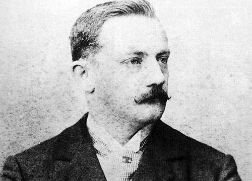
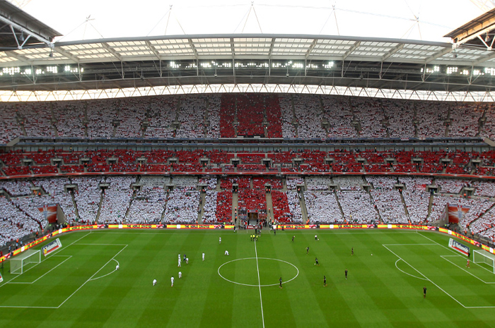

Não se tem absoluta convicção e precisão sobre a data na qual o futebol surgiu. Historiadores dizem que os ingleses que foram os criadores, adquiriram o hábito de chutar uma bola de couro, que simbolizava a cabeça de um membro do exército da dinamarques, como forma de comemorar a expulsão dos dinamarqueses de seu país ainda no século X. A ação era realizada todos os anos, poré, com o passar de tempo, a prática passou a ganhar mais notoriedade, e os jogos com a bola passou a ser realizado com maior frequência.
O futebol é o esporte mais popular do mundo e feito na Inglaterra, no século XVII. O começo das regras do futebol surgiu em 1830 e passou por diversas modificações ao passar do tempo. O esporte chegou ao Brasil em 1894, trazido por Charles Miller, um jovem filho de ingleses que chegou a São Paulo depois de concluir seus estudos na Europa. Charles trouxe consigo algumas bolas e as regras para a prática do futebol no país. Nos anos entre 1810 e 1840 foi registrado o crescimento desse jogo popular por diversos alunos das escolas públicas da Inglaterra, no entanto o esporte continuou sendo considerado uma prática não formal e até mesmo violenta e não apropriada aos jovens e crianças de alta classe dos colégios da elite inglesa.
 A institucionalização do futebol, que ocorreu em 1863. se deu muito pelo crescimento nos torneios e campeonatos entre os clubes, que foi impulsionado pela FA(instituição que formulou as primeiras regras para a prática do futebol),a partir da fundação da Football Association o esporte passou a ter mais visibilidade e ser mais reconhecido. Com isso a elaboração de campeonatos e partidas oficiais iniciou-se. A criação dos campeonatos foi importante para o surgimento de regras universais para o futebol, e, desde então, o esporte começou a se globalizar, universalmente.
Veja mais sobre o início do futebol